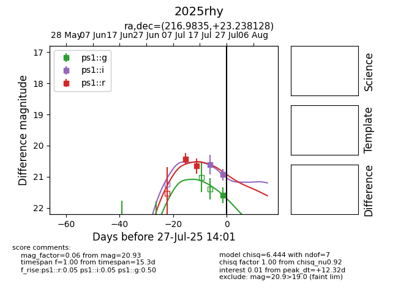

Target 2025rhy at 2025-07-27 14:01, see:
YSE: ziggy.ucolick.org/yse/transient_detail/2025rhy
alt names
2025rhy (yse)
coordinates:
equatorial (ra, dec) = (216.9835,+23.23813)
galactic (l, b) = (28.1753,+67.86111)
photometry
last ps1::g=21.58, ps1::i=20.93, ps1::r=20.66
1 ps1::g, 2 ps1::i, 2 ps1::r detections
